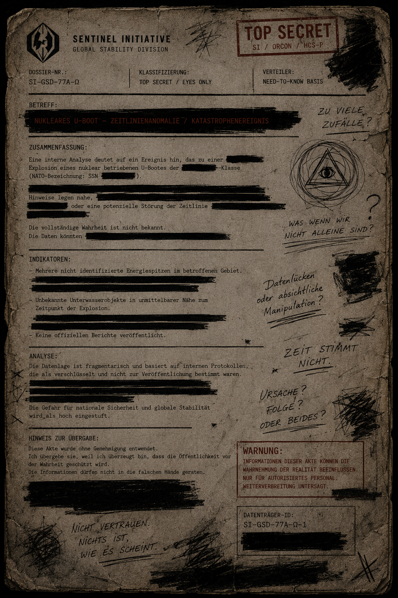

Ein nukleares Unterseeboot wurde nach einer nicht vollständig erklärbaren Explosion aus der bekannten Ereigniskette entfernt. Offizielle Stellen führen den Vorfall auf technische Instabilität zurück.
Interne Sentinel-Auswertung widerspricht dieser Annahme teilweise. Die Aufzeichnungen zeigen mehrere Sekunden Messdaten, die laut Zeitstempel nie hätten existieren dürfen.
Mögliche Verbindung zu ██████████, den sogenannten Gestalten und einer beschädigten Zeitlinie wird geprüft. Eine direkte Schuldzuweisung ist zum aktuellen Zeitpunkt nicht zulässig.
Die ursprüngliche Akte wurde durch eine unbekannte weibliche Quelle entwendet. Identität ungeklärt.
